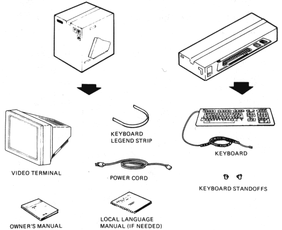
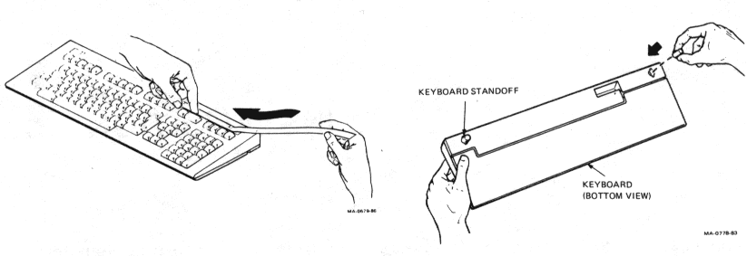
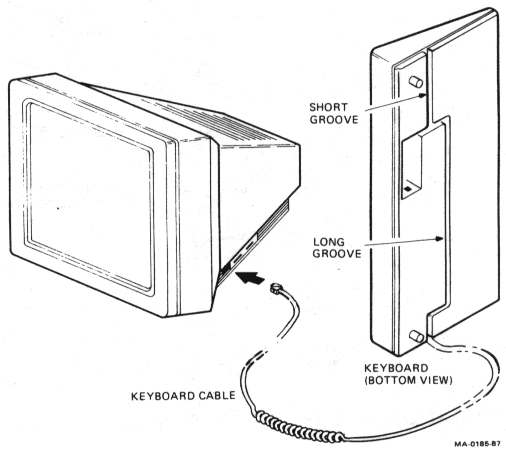
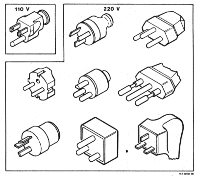
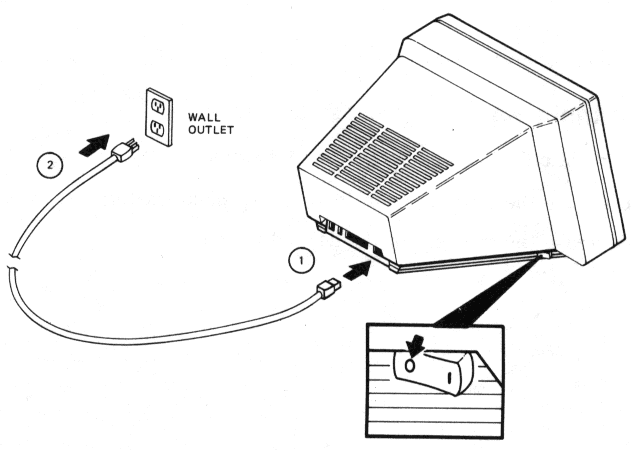
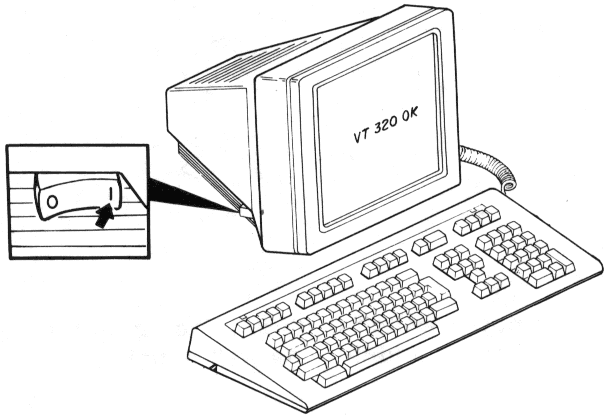
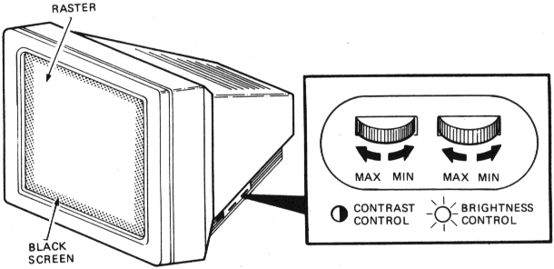
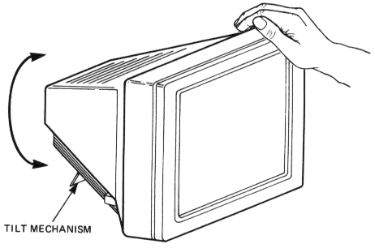
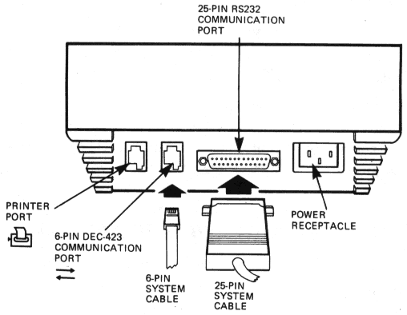

Installing and Using the VT320 Video Terminal
1 Installation
This chapter provides step-by-step instructions to install and turn on your terminal.
Perform each step in order.
Unpacking
Unpack and check the contents of each carton.
If you have missing or damaged items, contact your sales representative and
delivery agent.

Place the terminal on a level surface.
If you have the optional tilt-swivel base, install it now. The base comes with
installation instructions. To order the base, see Appendix B.
Installation
Install the keyboard's legend strip and standoffs.
To install the legend strip, slide it under the tabs.

Connect the keyboard to the video terminal.
- The keyboard cable is already connected to the keyboard and routed
to the left. If you want the cable routed to the right, remove the
cable from the short groove and press it into the long groove.
- Insert the other end of the cable into the connector on the right side
of the terminal.

Match the power cord to your wall outlet.

Make sure the power switch is off (0). Then plug the power
cord into the terminal and into the wall outlet.

Turn on your terminal.
- Turn the power switch on (1).
- Listen for a bell tone from the keyboard. Then wait about 15 seconds
for a "VT320 OK" message to appear on the screen.

NOTE: If you had problems, see "Operating Problems" in Chapter 7.
Set the brightness and contrast controls.
- Set the brightness and contrast to maximum.
- Decrease the brightness until the background (raster) just disappears.
- Decrease the contrast to the desired intensity.

Adjust the viewing angle.
Grasp the terminal and raise the rear, until the screen is at the desired viewing
angle.

Connectors
Connect the system cable and printer cable (if used).

You connect your system cable to one of the two communication ports on the
rear of the terminal -- the 25-pin RS232 connector or the 6-pin DEC-423 connector.
Check your system cable to see whether you have a 25-pin plug or a
6-pin jack.
Only one communication port is active at a time. By default, the 25-pin RS232
port is active.
If you use a 25-pin system cable: Simply plug the cable in. Then go on to the
next section, "Selecting the Correct Keyboard Language".
If you use a 6-pin system cable: You must set the Host Port Selection feature
in the Communications Set-Up screen to "DEC-423, Data Leads Only", as
follows.
NOTE: Chapter 4 shows each set-up screen.
- Press the Set-Up key to display the Set-Up Directory.
- Use the "> key to move the cursor to "Comm". Press the Enter
key to display the Communications Set-Up screen.
- Use the arrow keys to move the cursor to "RS232, Data Leads
Only". Press Enter to change the setting. Each time you press Enter,
a new setting appears. Stop when the setting reads "DEC-423, Data
Leads Only". If you go too far, keep pressing Enter until the setting
is correct.
- Use the arrow keys to move the cursor to "To Directory". Press
Enter to display the Set-Up Directory again.
- Move the cursor to "Save". Press Enter to save your new setting.
Each time you turn on the terminal, the VT320 will use the "DEC-423,
Data Leads Only" setting.
- Press Set-Up to leave set-up.
After you connect the system cable, the terminal is ready for use with your
host system. If your terminal fails to operate, see "Operating Problems" in
Chapter 7.
Selecting the Correct Keyboard Language
You must select the appropriate keyboard language from the Set-Up
Directory screen, as follows.
NOTE: Chapter 4 shows each set-up screen.
- Press the Set-Up key to display the Set-Up Directory.
- Use the arrow keys to move the cursor to "North American
Keyboard".
- Press the Enter key to select the setting you want. Each time you
press Enter, the setting changes. There are 15 possible settings.
- Move the cursor to "Save". Press the Enter key to save your new
keyboard language setting. Each time you turn on the terminal, the
VT320 will use your saved settings.
- Press Set-Up to leave set-up.
Selecting the Correct Baud Rate
The VT320 is initially set to a baud rate of 9600. This setting works with most
Digital systems. The baud rate setting must match the baud rate of your host
system. If you need to change the setting, use the following steps.
NOTE: Chapter 4 shows each set-up screen.
- Press the Set-Up key to display the Set-Up Directory.
- Use the "> key to move the cursor to "Comm". Press the Enter
key to display the Communications Set-Up screen.
- Use the arrow keys to move the cursor to "Transmit = 9600". There
are 10 possible settings, from 75 to 19,200 baud. Press Enter until
the correct setting for your system appears.
- The receive speed is set to "Receive=Transmit". Do not change this
feature, unless your system uses different transmit and receive
speeds.
- Move the cursor to "To Directory". Press Enter to display the Set-Up
Directory again.
- Move the cursor to "Save". Press Enter to save your new baud rate
setting. Each time you turn the terminal on, the VT320 will use this
setting.
- Press Set-Up to leave set-up.
http://vt100.net/docs/vt320-uu/chapter1.html